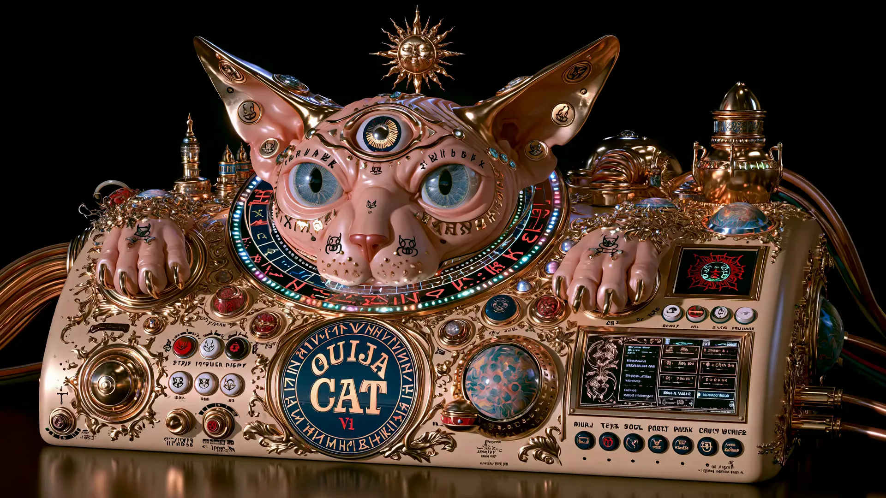

The Sleep Machine
How it works

Nothing on.
Off
Mixes
Every sound
Touch again to hide. Escape wakes the room.
Stop
the sound
Wake
the room
Dimmer
Show
Nothing leaves this device. Sound and light, not medicine.